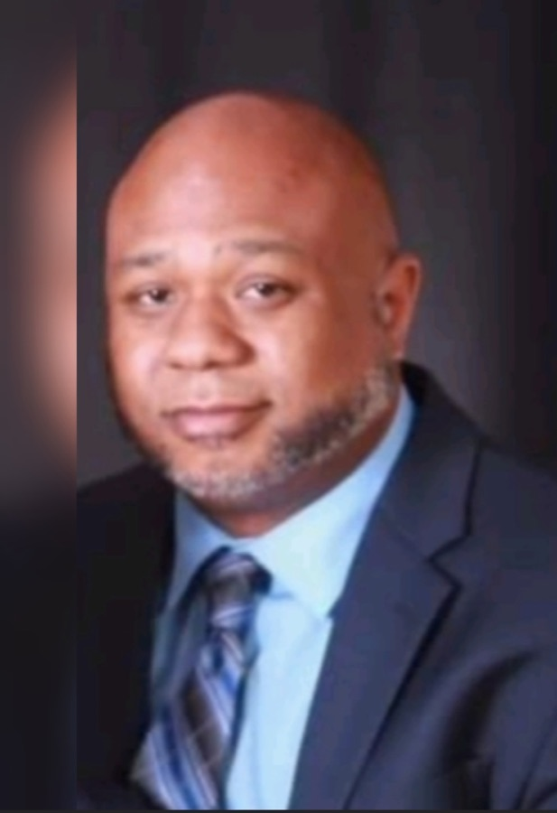

Lisa Wolff
I am the senior counselor here at Mercy Cares Counseling Services, LLC! I have been practicing since 2016. I understand that making the decision to start psychotherapy can be difficult for some people. Therefore, I strive to create a safe and welcoming environment for the healing process to take place. Moreover, I work in collaboration with clients in creating personalized plans for therapy to aid clients in reaching their goals. I specialize in trauma/ PTSD, mood disorders (anxiety, depression, OCD…), addiction (substance abuse), women’s issues, and couples counseling. I utilize a range of therapeutic approaches that are empirically supported to help clients achieve their goals for therapy. Such approaches include Self-care, Cognitive Behavioral Therapy, Mindfulness, Dialectical Behavioral Therapy, Person Centered Therapy, Motivational Interviewing, EMDR (Eye Movement Desensitization and Reprocessing), Brain spotting and Christian Based Spiritual Integrated Therapy (if desired).
License: State of Maryland LC9061
Education: Howard University (MAT /
1997)
Loyola University of Maryland, Masters of Science in
Mental Health/Pastoral Counseling (2016)
Modes of Therapy: In-Person, Telehealth/Virtual
Book an appointment ↗
Dr. Rhonda J. Beckwith
Every person is unique! Therefore, I believe treatment should be individually tailored to meet each person’s specific needs. What we think, how we feel and how we behave are all closely connected– and all these factors influence our overall well-being. I help my clients develop positive coping strategies to improve emotion regulation. Oftentimes there are unresolved conflicts and symptoms that arise from our past dysfunctional relationships, that manifest themselves in our present lives in unhealthy ways. I help my clients to gain insight into these recurring patterns and unconscious underlying resistances. I specialize in mental health and substance abuse (opioid/ alcohol), sexual trauma, aging, bullying, anger management, career counseling, depression, relationships, LGBTQ issues, self- image, stress, and suicide. I use Process Oriented Cognitive Behavioral Therapy, Motivational Interviewing, Mindfulness Practices, and Solution Focused modalities. I believe the key to a successful therapeutic relationship is trust. By providing empathy, unconditional positive regard, and congruence, I help my clients achieve greater independence and cope with any current and future problems they may face.
License: Licensed by State of Maryland / LC12868
Education: University of Southern California; Doctor of Psychology (Psy. D)
Modes of Therapy: Telehealth/Virtual
Book an appointment ↗
Jenell Crumpley
Healing starts with understanding your own story.
I believe one of the bravest things you can do is begin to understand your own story. As you share your own experience, powerful things happen. Your emotions of guilt subside, those false beliefs about what happened are disproved, the memories become less upsetting, and you start to feel more in control. There is no one-size-fits-all approach to healing. Whether you need help coping with chronic pain or other chronic illnesses, depression, PTSD, anxiety, insomnia, low self-esteem, or suicidal thoughts, you are not alone, and we are here to help. Our goal is to assist you in finding your strengths and new coping strategies. I use person-centered, strengths-based, solution-focused, and cognitive-behavioral-based interventions as part of my treatment approach. In therapy, we will work with you to figure out your goals and help you reach them with a friendly, real approach. We will work together to create a plan that works for you using methods that are intended to assist you in processing your current story's feelings, thoughts, actions, values, and beliefs. we will look at your goals, strengths, and resources to see which ones you think are sufficient and which ones need some work to help you feel complete.
License: Licensed by State of Maryland / LGP13516
Education: Degree/Diploma from
Liberty University M. Ed / 2020
Degree/Diploma from Bowie
State University B.S. Psychology / 1996
Attended Medaille College, M.A. Mental Health Counseling, Graduated
2012
Modes of Therapy: Telehealth/Virtual
Book an appointment ↗
Emmanuel Smith
I believe in helping people become happy, healthy, and whole. There is something spiritual in nature about the counseling process that I like to lean into to help others become the best versions of themselves. I enjoy the process of helping individuals to heal, cope, transform and thrive. I consider it to be a privilege to be a part of that journey. I am good at fostering a positive therapeutic alliance that is vital to building a solid foundation in which to grow from. I provide a safe, non-judgmental space for clients to work through their issues. I am trained to work with individuals who suffer from a variety of mental health issues including mood disorders, anxiety, depression, ADHD, spiritual issues, men’s issues, and couples counseling. Life can be overwhelming. I am here to listen to and help you navigate your way through it. I look forward to creating an alliance with you that will help you achieve your goals. If you are feeling stuck, I am here to help. Let me join you on the road to better you. Let's get started, you are worth it!
License: LGP13660
Education: Loyola University of Maryland, Master of Science in Mental Health and Pastoral Counseling
Modes of Therapy: In-Person, Telehealth/Virtual
Book an appointment ↗